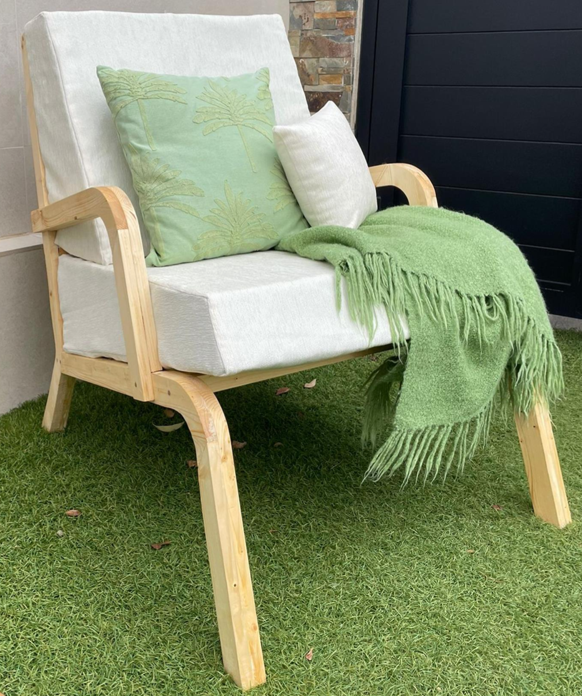
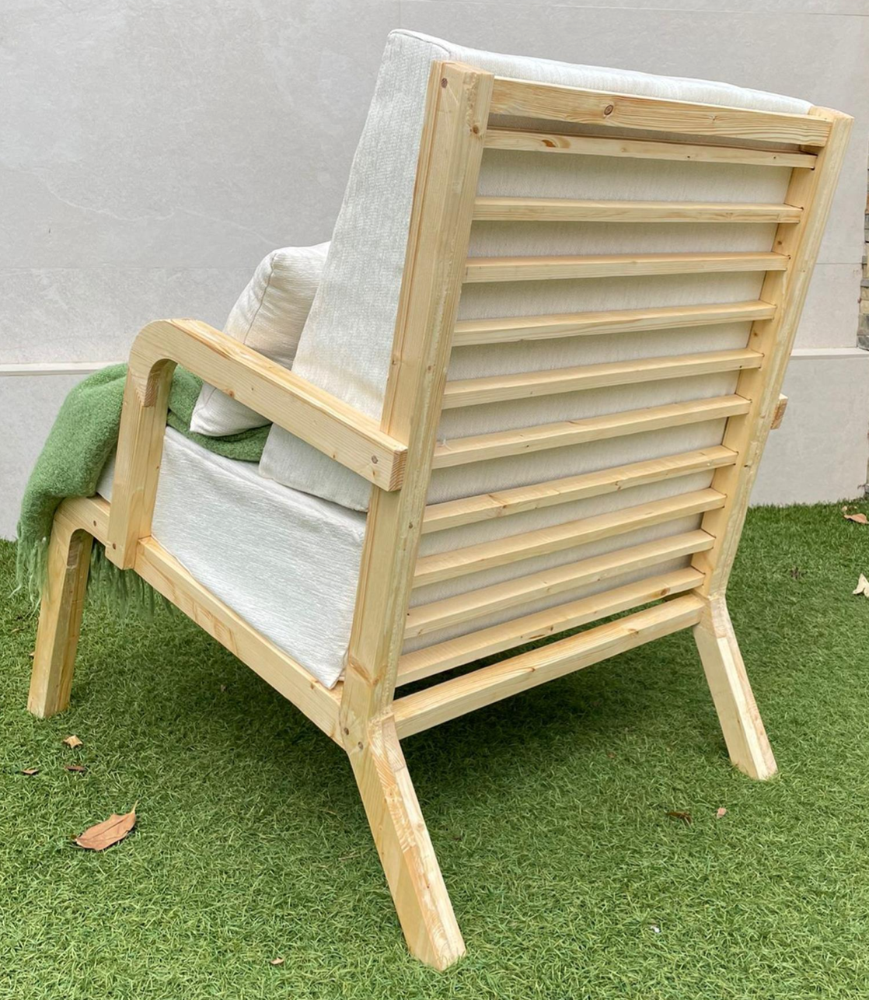
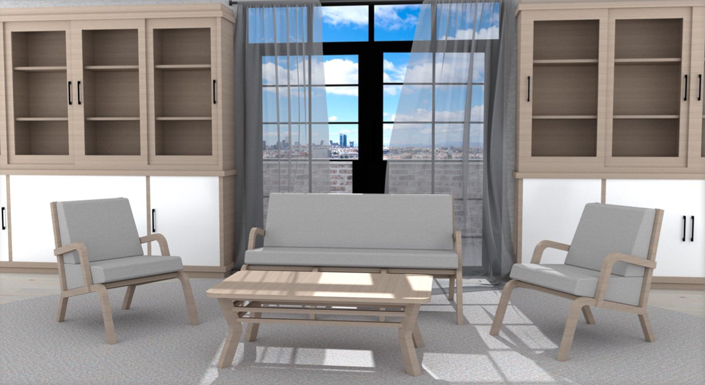

Tero
Butaca en olaboración con Pilma e inspirada del diseñador danés Finn Juhl. El reto fue crear un diseño ergonómico y cómodo manteniendo una estética armoniosa.



Detalles Técnicos
- Materiales: Madera de pino, gomaespuma y telas biodegradables.
- Dimensiones: 40 x 30 x 15 cm.
- Proceso: Fabricación mediante impresión 3D y ensamblaje modular.
Lo que dicen sobre el proyecto
"Un diseño funcional y estético. Perfecto para relajarse y leer un libro."